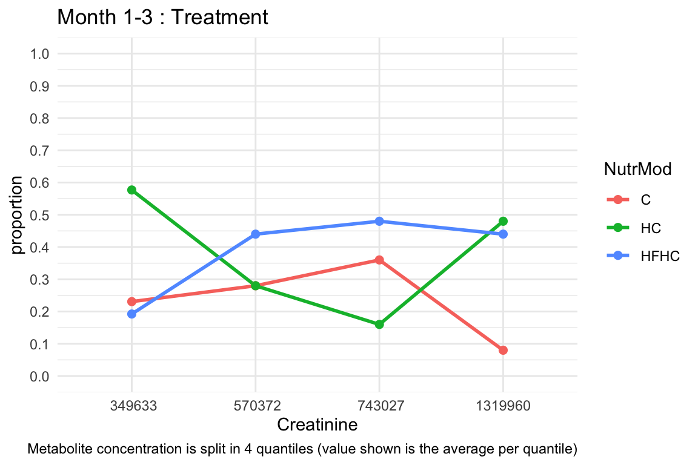
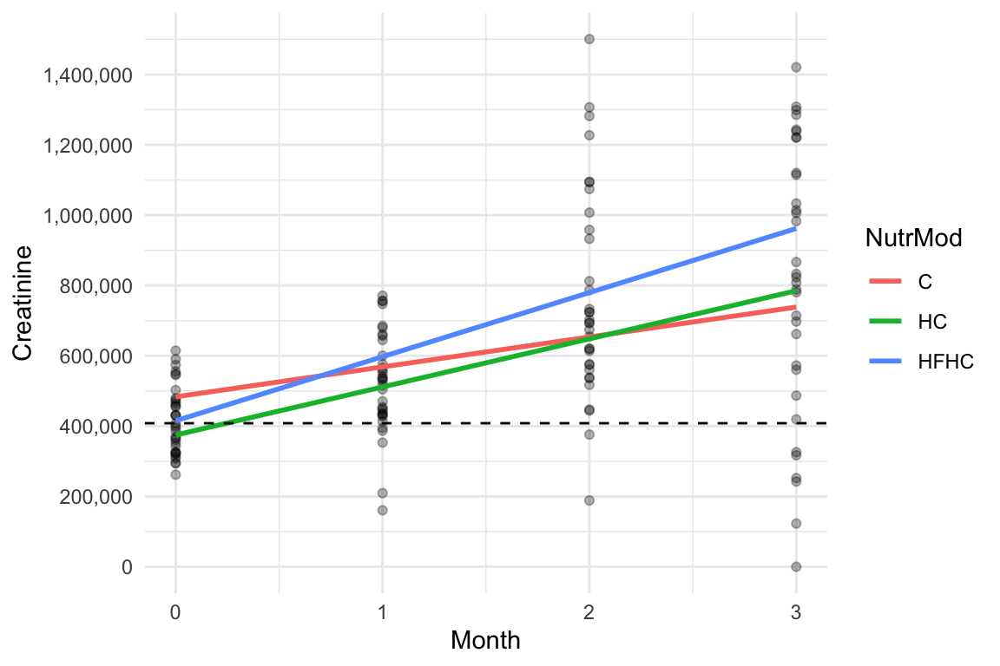
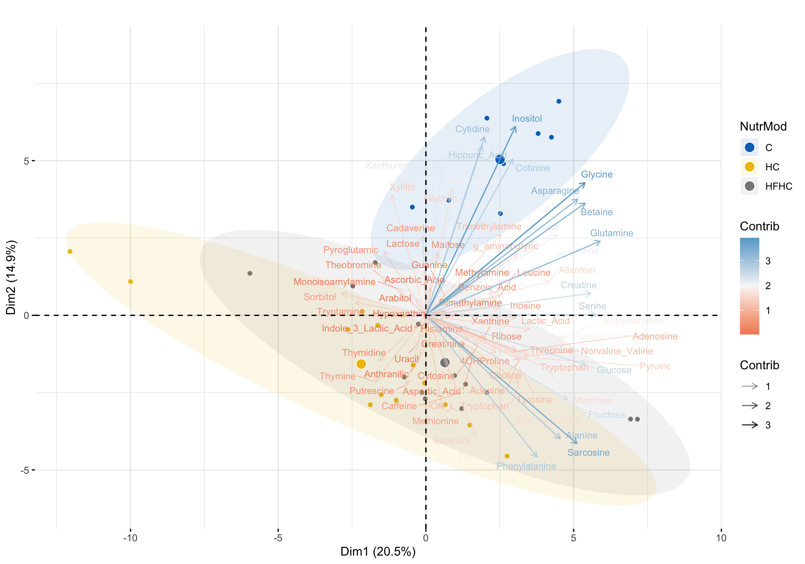
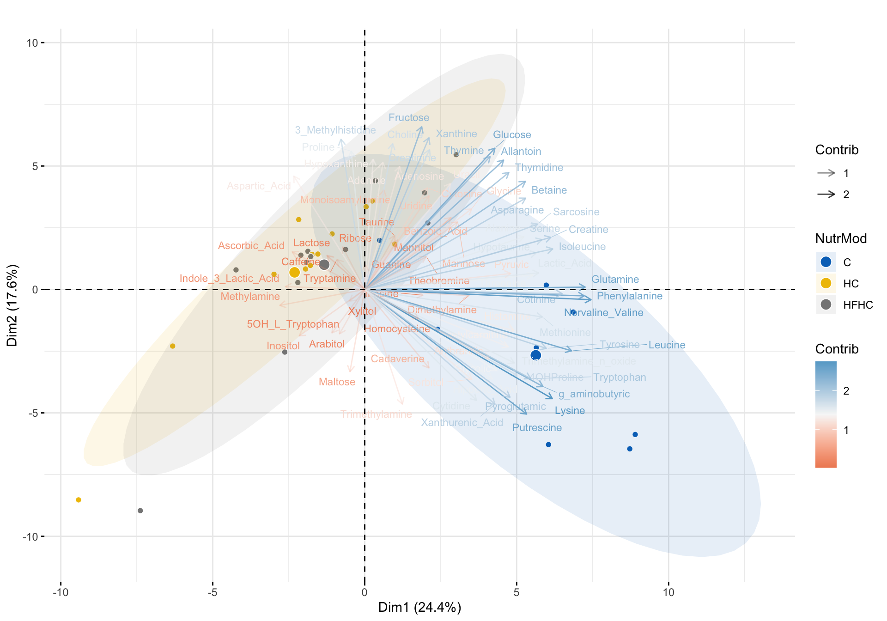

Modeling & Assessing Metabolic Syndrome In Rats (Metabolite Added Value)
1 Metabolic Syndrome Metabolites
Analysis’ focus is to examine the effects of nutritional models (i.e. plans) either directly on clinical measurements that might be associated with the metabolic syndrome or indirectly on metabolites that could have a potential association with the metabolic syndrome.
2 Using Surrogates To Clinical Endpoints
To identify primary metabolites that characterize aspects of the metabolic syndrome (as recorded in the clinical data), the following surrogate based procedure is used:
- From the metabolite data, observations from only the last recorded time point 4 (i.e. month 3 post-mortem) are extracted.
- For each clinical endpoint (as recorded in the clinical data) likelihood ratio testing (LRT) is used against all metabolites of the last recorded time point 4 only. Metabolites are assumed to have a non-linear association with the clinical endpoint and the nutritional model grouping is also added into the model in order to adjust for its potential effect.
- For each clinical endpoint (as recorded in the clinical data), the most significant metabolite in terms of the LRT’s
Chi Squaredvalue i.e. metabolite pooled p-value that has been FDR adjusted, as well as the nutritional model’s p-value are obtained and stored for later use. The FDR-adjusted p-value for the metabolite and the nutritional model’s p-value thresholds that are used are<20%and>5%respectively. All other metabolites are discarded.
Results for the metabolites that survive the above thresholds are shown in the table below.
Continuing the above procedure with step 4:
- For each clinical endpoint (column
clinicalVar) that has been selected from step3, the metabolite (columnmetaboliteVar) with thelargest significance(i.e. association) is used as asurrogatevariable. In the above table, metabolites are sorted in descending significance for each clinical endpoint. If there are more than one metabolites per clinical endpoint, then the other, less significant, metabolites are used as covariate adjustments at time point 0 as mentioned in step5below. - For each clinical endpoint (column
clinicalVar) that has been selected from step3, the correspondingsurrogatemetabolite as per step4is used as the response variable in a longitudinal model in order to test the effects of the nutritional model upon it. In essence, the effects of the nutritional model are examined through time and on the surrogate metabolite instead of the actual but non-longitudinal clinical endpoint. The longitudinal model is not only adjusted for the surrogate’s measurement at time point 0, thus accounting for any potential age differences, but also for the presence of any other less significantly associated metabolite measurements at time point 0.
- For each longitudinal model, the probabilities of nutrition model difference on the surrogate metabolite being larger than
0are extracted, and the ones exceeding70%are kept for further examination.
The table below shows the results from step 6:
| comparison | Pr(diff>0) | clinicalVar | surrogate | adjustedToTime0 |
|---|---|---|---|---|
| HC_C | 0.5068 | BUN | Dimethylamine | Dimethylamine0-Lactose0-Ascorbic_Acid0-Putrescine0-Trimethylamine_n_oxide0-Ribose0-Trimethylamine0-Arabitol0-Allantoin0-Indole_3_Lactic_Acid0-Creatinine0 |
| HFHC_C | 0.5002 | BUN | Dimethylamine | Dimethylamine0-Lactose0-Ascorbic_Acid0-Putrescine0-Trimethylamine_n_oxide0-Ribose0-Trimethylamine0-Arabitol0-Allantoin0-Indole_3_Lactic_Acid0-Creatinine0 |
| HC_C | 0.4348 | Creatinine | Creatinine | Creatinine0-Arabitol0-Allantoin0-Trimethylamine0-Indole_3_Lactic_Acid0-Ribose0-Ascorbic_Acid0-Lactose0-Trimethylamine_n_oxide0-3_Methylhistidine0-Putrescine0-Dimethylamine0 |
| HFHC_C | 0.4175 | Creatinine | Creatinine | Creatinine0-Arabitol0-Allantoin0-Trimethylamine0-Indole_3_Lactic_Acid0-Ribose0-Ascorbic_Acid0-Lactose0-Trimethylamine_n_oxide0-3_Methylhistidine0-Putrescine0-Dimethylamine0 |
| HC_C | 0.2828 | LDH | Histamine | Histamine0 |
| HFHC_C | 0.3088 | LDH | Histamine | Histamine0 |
| HC_C | 0.4375 | Na | Lactic_Acid | Lactic_Acid0-Thymidine0 |
| HFHC_C | 0.4810 | Na | Lactic_Acid | Lactic_Acid0-Thymidine0 |
| HC_C | 0.4205 | TGL_HDL_ratio | Benzoic_Acid | Benzoic_Acid0-Maltose0-Fructose0-Cytidine0-Creatine0-Isoleucine0-Phenylalanine0-Tryptophan0-Acetylcarnitine0 |
| HFHC_C | 0.3750 | TGL_HDL_ratio | Benzoic_Acid | Benzoic_Acid0-Maltose0-Fructose0-Cytidine0-Creatine0-Isoleucine0-Phenylalanine0-Tryptophan0-Acetylcarnitine0 |
| HC_C | 0.6688 | Uric_Αcid | Pyroglutamic | Pyroglutamic0-Uracil0-Xanthine0-Creatine0-Serine0-Isoleucine0-Phenylalanine0-Fructose0-Glucose0-Tyrosine0-Adenosine0-Methionine0 |
| HFHC_C | 0.7908 | Uric_Αcid | Pyroglutamic | Pyroglutamic0-Uracil0-Xanthine0-Creatine0-Serine0-Isoleucine0-Phenylalanine0-Fructose0-Glucose0-Tyrosine0-Adenosine0-Methionine0 |
Dimethylamine - Surrogate Of BUN
The BUN clinical measurement stands for Blood Urea Nitrogen.
It is a common blood test that measures the amount of urea nitrogen in blood.
Urea nitrogen is a waste product that forms in the liver when the body breaks down proteins (amino acids). It travels in the bloodstream to the kidneys, which normally filter it out and remove it from the body in the urine.
The primary use of the BUN test is to evaluate kidney function.
- If the kidneys are not working properly, they may not be able to filter urea nitrogen effectively, causing the BUN level in the blood to rise above the normal range.
- The test is often ordered as part of a Comprehensive Metabolic Panel (CMP) or Basic Metabolic Panel (BMP).
- It is frequently compared with the level of creatinine (another waste product) to calculate the BUN-to-Creatinine ratio, which is a more reliable indicator of kidney health and can help diagnose the cause of an abnormal result (e.g., dehydration, heart failure, or direct kidney damage).
High BUN Levels
A higher-than-normal BUN level (azotemia) can suggest:
- Kidney injury or disease (the most common concern).
- Dehydration (low blood flow to the kidneys).
- Congestive heart failure or recent heart attack (also causing low blood flow to the kidneys).
- Urinary tract obstruction.
- A high-protein diet.
- Gastrointestinal bleeding.
Low BUN Levels
A lower-than-normal BUN level is less common but can be associated with:
- Severe liver disease (since the liver is where urea is formed).
- Malnutrition or a diet very low in protein.
- Overhydration (drinking too much fluid).
Normal BUN levels generally range between \(\text{6}\) and \(\text{24 mg/dL}\) (milligrams per deciliter), but this can vary based on the lab and ones age and sex.
[1] "Lactose, Ascorbic_Acid, Putrescine, Trimethylamine_n_oxide, Ribose, Trimethylamine, Arabitol, Allantoin, Indole_3_Lactic_Acid, Creatinine"
### Summary of continuous variables ###
NutrMod: Overall
n miss p.miss mean sd median p25 p75 min max skew kurt
Dimethylamine0 34 0 0 815 549 984 109 1213 1 1720 -0.31 -1.2
------------------------------------------------------------------------------------------
NutrMod: C
n miss p.miss mean sd median p25 p75 min max skew kurt
Dimethylamine0 8 0 0 620 469 680 149 1030 40 1179 -0.15 -1.9
------------------------------------------------------------------------------------------
NutrMod: HC
n miss p.miss mean sd median p25 p75 min max skew kurt
Dimethylamine0 13 0 0 1133 546 1305 1030 1439 1 1720 -1.4 1.4
------------------------------------------------------------------------------------------
NutrMod: HFHC
n miss p.miss mean sd median p25 p75 min max skew kurt
Dimethylamine0 13 0 0 618 476 863 67 972 38 1224 -0.31 -1.9
p-values
pNormal pNonNormal
Dimethylamine0 0.02413538 0.01351516
Standardize mean differences
average 1 vs 2 1 vs 3 2 vs 3
Dimethylamine0 0.673444 1.008563 0.004941165 1.006828| Overall | C | HC | HFHC | p | test | SMD | |
|---|---|---|---|---|---|---|---|
| n | 34 | 8 | 13 | 13 | |||
| Dimethylamine0 (median [IQR]) | 983.81 [109.47, 1,212.88] | 680.38 [148.51, 1,030.49] | 1,304.85 [1,030.29, 1,439.43] | 862.54 [67.48, 972.41] | 0.014 | nonnorm | 0.673 |

Dimethylamine at Month 0 : Baseline

Dimethylamine at Months 1-3 : Treatment

Dimethylamine. HC vs C difference

Dimethylamine. HFHC vs C difference

Dimethylamine. HFHC vs HC difference

Dimethylamine nutritional model differences from baseline at t0 (trends)

Dimethylamine nutritional model differences based on raw data. Dashed horizontal line corresponds to the adjustment value of Dimethylamine at time 0.

Dimethylamine nutritional model differences from baseline at t0 (split view). Points denote median concentrations and lines denote the corresponding central 80% likelihood intervals.

Dimethylamine nutritional model differences versus Dimethylamine at time 0 (trends) using raw data.

Dimethylamine nutritional model differences versus Dimethylamine at time 0 (trends) using model adjustment.
(a), the differences of the nutritional models depend on the baseline value. With adjustment, graph (b), the differences of the nutritional models do not depend on the baseline value i.e. trend lines are almost parallel to each other.
Creatinine - Surrogate Of Creatinine
[1] "Arabitol, Allantoin, Trimethylamine, Indole_3_Lactic_Acid, Ribose, Ascorbic_Acid, Lactose, Trimethylamine_n_oxide, 3_Methylhistidine, Putrescine, Dimethylamine"
### Summary of continuous variables ###
NutrMod: Overall
n miss p.miss mean sd median p25 p75 min max skew kurt
Creatinine0 34 0 0 416780 95499 4e+05 330474 474059 262064 614765 0.42 -0.79
------------------------------------------------------------------------------------------
NutrMod: C
n miss p.miss mean sd median p25 p75 min max skew kurt
Creatinine0 8 0 0 528211 99995 551884 534786 578055 294854 614765 -2.2 5.5
------------------------------------------------------------------------------------------
NutrMod: HC
n miss p.miss mean sd median p25 p75 min max skew kurt
Creatinine0 13 0 0 388394 50979 385406 351877 408273 321035 479180 0.57 -0.39
------------------------------------------------------------------------------------------
NutrMod: HFHC
n miss p.miss mean sd median p25 p75 min max skew kurt
Creatinine0 13 0 0 376592 75818 360635 313245 455319 262064 469673 -0.028 -1.8
p-values
pNormal pNonNormal
Creatinine0 0.0001449719 0.004535012
Standardize mean differences
average 1 vs 2 1 vs 3 2 vs 3
Creatinine0 1.217686 1.761674 1.708695 0.1826875| Overall | C | HC | HFHC | p | test | SMD | |
|---|---|---|---|---|---|---|---|
| n | 34 | 8 | 13 | 13 | |||
| Creatinine0 (median [IQR]) | 4e+05 [330,474.23, 474,059.04] | 551,883.75 [534,785.60, 578,054.53] | 385,405.66 [351,877.47, 408,273.16] | 360,635.09 [313,245.34, 455,319.12] | 0.005 | nonnorm | 1.218 |

Creatinine at Month 0 : Baseline

Creatinine at Months 1-3 : Treatment

Creatinine. HC vs C difference

Creatinine. HFHC vs C difference

Creatinine. HFHC vs HC difference

Creatinine nutritional model differences from baseline at t0 (trends)

Creatinine nutritional model differences based on raw data. Dashed horizontal line corresponds to the adjustment value of Creatinine at time 0.

Creatinine nutritional model differences from baseline at t0 (split view). Points denote median concentrations and lines denote the corresponding central 80% likelihood intervals.
Creatinine nutritional model differences versus Creatinine at time 0 (trends) using raw data.

Creatinine nutritional model differences versus Creatinine at time 0 (trends) using model adjustment.
(a), the differences of the nutritional models depend on the baseline value. With adjustment, graph (b), the differences of the nutritional models do not depend on the baseline value i.e. trend lines are almost parallel to each other.
Lactic Acid - Surrogate Of Na
[1] "Thymidine"
### Summary of continuous variables ###
NutrMod: Overall
n miss p.miss mean sd median p25 p75 min max skew kurt
Lactic_Acid0 34 0 0 2488 827 2211 1930 2942 1275 4483 1.1 0.42
------------------------------------------------------------------------------------------
NutrMod: C
n miss p.miss mean sd median p25 p75 min max skew kurt
Lactic_Acid0 8 0 0 2091 350 2048 1908 2250 1540 2729 0.42 1.1
------------------------------------------------------------------------------------------
NutrMod: HC
n miss p.miss mean sd median p25 p75 min max skew kurt
Lactic_Acid0 13 0 0 2967 849 2890 2452 3350 1985 4483 0.68 -0.72
------------------------------------------------------------------------------------------
NutrMod: HFHC
n miss p.miss mean sd median p25 p75 min max skew kurt
Lactic_Acid0 13 0 0 2253 821 1959 1857 2450 1275 4232 1.4 1.6
p-values
pNormal pNonNormal
Lactic_Acid0 0.02130556 0.0125301
Standardize mean differences
average 1 vs 2 1 vs 3 2 vs 3
Lactic_Acid0 0.8198847 1.348614 0.2560398 0.8550005| Overall | C | HC | HFHC | p | test | SMD | |
|---|---|---|---|---|---|---|---|
| n | 34 | 8 | 13 | 13 | |||
| Lactic_Acid0 (median [IQR]) | 2,210.92 [1,930.23, 2,941.61] | 2,048.40 [1,908.06, 2,250.37] | 2,890.13 [2,452.19, 3,350.35] | 1,959.41 [1,857.08, 2,449.71] | 0.013 | nonnorm | 0.820 |

Lactic_Acid at Month 0 : Baseline

Lactic_Acid at Months 1-3 : Treatment

Lactic_Acid. HC vs C difference

Lactic_Acid. HFHC vs C difference

Lactic_Acid. HFHC vs HC difference

Lactic_Acid nutritional model differences from baseline at t0 (trends)

Lactic_Acid nutritional model differences based on raw data. Dashed horizontal line corresponds to the adjustment value of Lactic_Acid at time 0.

Lactic_Acid nutritional model differences from baseline at t0 (split view). Points denote median concentrations and lines denote the corresponding central 80% likelihood intervals.

Lactic_Acid nutritional model differences versus Lactic_Acid at time 0 (trends) using raw data.

Lactic_Acid nutritional model differences versus Lactic_Acid at time 0 (trends) using model adjustment.
(a), the differences of the nutritional models depend on the baseline value. With adjustment, graph (b), the differences of the nutritional models do not depend on the baseline value i.e. trend lines are almost parallel to each other.
Benzoic Acid - Surrogate Of TGL to HDL Ratio
[1] "Maltose, Fructose, Cytidine, Creatine, Isoleucine, Phenylalanine, Tryptophan, Acetylcarnitine"
### Summary of continuous variables ###
NutrMod: Overall
n miss p.miss mean sd median p25 p75 min max skew kurt
Benzoic_Acid0 34 0 0 19 3.6 19 16 22 12 26 -0.28 -0.76
------------------------------------------------------------------------------------------
NutrMod: C
n miss p.miss mean sd median p25 p75 min max skew kurt
Benzoic_Acid0 8 0 0 19 4.1 19 16 22 12 23 -0.26 -1
------------------------------------------------------------------------------------------
NutrMod: HC
n miss p.miss mean sd median p25 p75 min max skew kurt
Benzoic_Acid0 13 0 0 19 4.2 20 15 22 13 26 -0.24 -1
------------------------------------------------------------------------------------------
NutrMod: HFHC
n miss p.miss mean sd median p25 p75 min max skew kurt
Benzoic_Acid0 13 0 0 19 2.8 19 17 21 13 22 -0.75 -0.26
p-values
pNormal pNonNormal
Benzoic_Acid0 0.9158615 0.9652747
Standardize mean differences
average 1 vs 2 1 vs 3 2 vs 3
Benzoic_Acid0 0.120627 0.1662403 0.1023771 0.09326363| Overall | C | HC | HFHC | p | test | SMD | |
|---|---|---|---|---|---|---|---|
| n | 34 | 8 | 13 | 13 | |||
| Benzoic_Acid0 (median [IQR]) | 19.14 [15.86, 21.58] | 18.60 [15.63, 22.04] | 20.22 [15.12, 21.62] | 19.03 [17.30, 21.43] | 0.965 | nonnorm | 0.121 |

Benzoic_Acid at Month 0 : Baseline

Benzoic_Acid at Months 1-3 : Treatment

Benzoic_Acid. HC vs C difference

Benzoic_Acid. HFHC vs C difference

Benzoic_Acid. HFHC vs HC difference

Benzoic_Acid nutritional model differences from baseline at t0 (trends)

Benzoic_Acid nutritional model differences based on raw data. Dashed horizontal line corresponds to the adjustment value of Benzoic_Acid at time 0.

Benzoic_Acid nutritional model differences from baseline at t0 (split view). Points denote median concentrations and lines denote the corresponding central 80% likelihood intervals.

Benzoic_Acid nutritional model differences versus Benzoic_Acid at time 0 (trends) using raw data.

Benzoic_Acid nutritional model differences versus Benzoic_Acid at time 0 (trends) using model adjustment.
(a), the differences of the nutritional models depend on the baseline value. With adjustment, graph (b), the differences of the nutritional models do not depend on the baseline value i.e. trend lines are almost parallel to each other.
Pyroglutamic - Surrogate Of Uric Αcid
Uric acid is a naturally occurring chemical compound in the body that serves as a vital marker for several metabolic and health conditions. It is the final waste product that results from the metabolic breakdown of purines.
- Purines are chemical substances that are components of DNA and RNA. They are found naturally in every cell in the human body, but they are also consumed through the diet, particularly in certain foods and drinks (like red meat, organ meats, seafood, and alcohol).
- The body produces uric acid from these purines, mainly in the liver, and it typically dissolves in the blood.
- The kidneys are responsible for filtering out most of the uric acid from the blood, which is then excreted from the body via urine.
In humans, uric acid also acts as a potent antioxidant in the blood, which can be a protective function.
High Levels
When the body either produces too much uric acid or the kidneys do not excrete enough of it, the level in the blood rises, a condition called hyperuricemia. This can lead to serious health issues:
- Gout (Arthritis): This is the most well-known condition. When uric acid levels are too high, it can form sharp, needle-like monosodium urate crystals that deposit in the joints, triggering sudden, severe attacks of pain, swelling, and inflammation. The big toe is most commonly affected.
- Kidney Stones: High concentrations of uric acid can crystallize in the kidneys, forming painful uric acid kidney stones.
- Metabolic & Cardiovascular Issues: Hyperuricemia is often associated with and may contribute to other conditions, including:
- Hypertension (High blood pressure)
- Chronic Kidney Disease (CKD)
- Metabolic Syndrome
- Type 2 Diabetes
Normal Range
The normal reference ranges for uric acid in the blood can vary slightly between laboratories and are generally different for men and women:
| Group | Normal Range (approx.) |
|---|---|
| Adult Males | \(3.5 - 7.2 \text{ mg/dL}\) |
| Adult Females | \(2.6 - 6.0 \text{ mg/dL}\) |
Note: The level that increases the risk of gout is often considered to be \(\text{> 6.0 mg/dL}\) or \(\text{> 7.0 mg/dL}\) as this is the point where the blood becomes saturated and crystals can begin to form.
Low Uric Acid Levels
While less common, lower-than-normal levels (hypouricemia) can also be a sign of underlying issues, such as:
- Severe liver disease.
- Certain rare inherited metabolic disorders.
- A side effect of some medications (e.g., those used to treat gout).
[1] "Uracil, Xanthine, Creatine, Serine, Isoleucine, Phenylalanine, Fructose, Glucose, Tyrosine, Adenosine, Methionine"
### Summary of continuous variables ###
NutrMod: Overall
n miss p.miss mean sd median p25 p75 min max skew kurt
Pyroglutamic0 34 0 0 4304 5937 25 1 9200 1 18183 0.94 -0.59
------------------------------------------------------------------------------------------
NutrMod: C
n miss p.miss mean sd median p25 p75 min max skew kurt
Pyroglutamic0 8 0 0 5947 8277 1 1 14617 1 18183 0.71 -1.9
------------------------------------------------------------------------------------------
NutrMod: HC
n miss p.miss mean sd median p25 p75 min max skew kurt
Pyroglutamic0 13 0 0 3882 5408 1 1 8395 1 15480 0.98 -0.33
------------------------------------------------------------------------------------------
NutrMod: HFHC
n miss p.miss mean sd median p25 p75 min max skew kurt
Pyroglutamic0 13 0 0 3716 5037 139 1 9235 1 11976 0.79 -1.4
p-values
pNormal pNonNormal
Pyroglutamic0 0.6816713 0.6613958
Standardize mean differences
average 1 vs 2 1 vs 3 2 vs 3
Pyroglutamic0 0.2176336 0.2953509 0.3256828 0.03186713| Overall | C | HC | HFHC | p | test | SMD | |
|---|---|---|---|---|---|---|---|
| n | 34 | 8 | 13 | 13 | |||
| Pyroglutamic0 (median [IQR]) | 25.46 [1.00, 9,199.78] | 1.00 [1.00, 14,617.16] | 1.00 [1.00, 8,395.41] | 138.95 [1.00, 9,235.15] | 0.661 | nonnorm | 0.218 |

Pyroglutamic at Month 0 : Baseline

Pyroglutamic at Months 1-3 : Treatment

Pyroglutamic. HC vs C difference

Pyroglutamic. HFHC vs C difference

Pyroglutamic. HFHC vs HC difference

Pyroglutamic nutritional model differences from baseline at t0 (trends)

Pyroglutamic nutritional model differences based on raw data. Dashed horizontal line corresponds to the adjustment value of Pyroglutamic at time 0.

Pyroglutamic nutritional model differences from baseline at t0 (split view). Points denote median concentrations and lines denote the corresponding central 80% likelihood intervals.

Pyroglutamic nutritional model differences versus Pyroglutamic at time 0 (trends) using raw data.

Pyroglutamic nutritional model differences versus Pyroglutamic at time 0 (trends) using model adjustment.
(a), the differences of the nutritional models depend on the baseline value. With adjustment, graph (b), the differences of the nutritional models do not depend on the baseline value i.e. trend lines are almost parallel to each other.
Pyroglutamic acid (also known as 5-oxoproline or pidolic acid) is a metabolic intermediate in the \(\gamma\)-glutamyl cycle, which is the primary pathway the body uses to produce and recycle glutathione, its most powerful internal antioxidant.
Clinically, measuring pyroglutamic acid is important because it acts as a “canary in the coal mine” for glutathione depletion and certain metabolic disorders.
The \(\gamma\)-Glutamyl Cycle
Pyroglutamic acid is produced in the liver, kidneys, and brain. In a healthy cycle, it is a temporary “stop” on the way to making glutamate. An enzyme called 5-oxoprolinase normally converts pyroglutamic acid into glutamate so the cycle can continue.
If this cycle is interrupted—either because an enzyme is missing or because the body is under extreme stress—pyroglutamic acid “leaks” out into the blood (pyroglutatmic acidemia) and urine (pyroglutamic aciduria).
A doctor might measure pyroglutamic acid (usually via a urine organic acid test) to investigate a High Anion Gap Metabolic Acidosis (HAGMA)—a condition where the blood becomes too acidic for reasons that aren’t immediately obvious (like diabetes or kidney failure).
1. Acquired Causes (Most Common)
- Chronic Acetaminophen (Tylenol) Use: This is the most notorious cause. Acetaminophen depletes glutathione. When glutathione stores are low, the body’s feedback loop goes into overdrive to make more, accidentally causing an “overflow” of pyroglutamic acid.
- Malnutrition: A lack of the amino acids glycine or cysteine (the building blocks of glutathione) can cause the cycle to stall and pyroglutamic acid to build up.
- Certain Antibiotics: Drugs like flucloxacillin and vigabatrin can interfere with the enzymes in the cycle.
- Sepsis or Liver Disease: Severe systemic illness can overwhelm the body’s antioxidant capacity.
2. Genetic Causes (Rare)
- Glutathione Synthetase Deficiency: A rare inherited disorder that causes chronic high levels of pyroglutamic acid, leading to hemolytic anemia and neurological issues.
- 5-Oxoprolinase Deficiency: A rare condition where the body cannot break down pyroglutamic acid, though this often has milder symptoms.
| Level | Interpretation |
|---|---|
| Normal | Typically \(< \text{170 mmol/mol creatinine}\) (Urine). A small amount is normal. |
| Elevated | Suggests glutathione deficiency, oxidative stress, or specific drug interference. |
| Very High | Often indicates Pyroglutamic Acidosis, requiring medical intervention to balance blood pH. |
Symptoms of High Levels
Because elevated pyroglutamic acid often coincides with metabolic acidosis, symptoms may include: * Rapid breathing (tachypnea) or shortness of breath. * Confusion or mental “fogginess.” * Extreme fatigue or malaise. * Nausea and vomiting.
While pyroglutamic acid and uric acid are distinct molecules from two different metabolic pathways, they are “biochemical cousins” in the way they reflect the body’s antioxidant status and response to oxidative stress.
They are not directly made from one another, but they often “react” to the same health conditions.
1. The Antioxidant Connection
The most significant link between them is their relationship to Glutathione, the body’s “master antioxidant.”
- Pyroglutamic Acid: High levels of this usually mean the glutathione levels are depleted. When we run out of glutathione, our cells are left unprotected against damage.
- Uric Acid: Interestingly, uric acid is also a powerful antioxidant (it provides about \(50\%\) of the antioxidant capacity in the blood).
- The Link: When glutathione levels drop (marked by high pyroglutamic acid), the body sometimes increases uric acid production as a “backup” to help neutralize oxidative stress.
2. Common Triggers
You will often see both markers move out of range due to the same underlying causes:
- Kidney Function: Both are cleared from the body by the kidneys. If kidney function is sluggish, both pyroglutamic acid and uric acid can build up in the blood.
- Alcohol Consumption: Chronic alcohol use depletes glutathione (raising pyroglutamic acid) and simultaneously increases the breakdown of purines (raising uric acid).
- Metabolic Syndrome: Conditions like obesity and insulin resistance are high-stress states for the body. This stress can lead to lower glutathione stores and higher circulating uric acid.
3. Key Differences at a Glance
| Feature | Pyroglutamic Acid | Uric Acid |
|---|---|---|
| Origin | The \(\gamma\)-glutamyl cycle (Glutathione) | Purine metabolism (DNA/RNA breakdown) |
| Primary Meaning | Shows Glutathione deficiency or “waste” | Shows Purine turnover or excretion issues |
| Main Clinical Risk | Metabolic Acidosis (blood becomes acidic) | Gout and Kidney Stones |
| Major Trigger | Acetaminophen (Tylenol), Malnutrition | High-purine diet, Alcohol, Dehydration |
In short: They are not the same thing, but if a lab report shows both are high, it is a strong signal that the body is under significant oxidative stress or that the kidneys are having trouble processing metabolic waste.
3 Using Other Non Surrogate Metabolites
Here, metabolites that have not been found to be associated with any of the clinical variables are tested for nutritional model differences via longitudinal models adjusting for the metabolite’s value at time point 0.
As in the previous analysis and its step 6, for each longitudinal model, the probabilities of nutrition model difference on the metabolite being larger than 0 are extracted, and the ones exceeding 70% are kept for further examination.
The table below shows the results:
These results lead to the development of 24 models based on the distinct metabolite cases of the above table, which are arranged below by decreasing average probability of nutrition model difference:
Arabitol
Contains 19 non-detected cases i.e. 1s, out of 101 total cases post baseline.
Sorbitol
Contains 39 non-detected cases i.e. 1s, out of 101 total cases post baseline.
Theobromine
Contains 51 non-detected cases i.e. 1s, out of 101 total cases post baseline.
4 Multivariate Analysis
Exploratory types of analyses follow below, in search of other questions or hypothesis about metabolite rat blood concentrations and clinical variables i.e. not primarily focusing on the nutritional models’ effect as in the previous analysis.
Post-Mortem Data


1.
2.

3

1 and 2.
1 and 4.

2 and 4.
Longitudinal Data
Time Point (Month) separation emphasis.
Nutritional Model separation emphasis.
Per Time or Month - Unadjusted for Time 0

time 0.

time 1.

time 2.

time 3.
Per Time or Month - Adjusted for Time 0

time 0. Adjusted for the median value of each metabolite at time 0.

time 1. Adjusted for the median value of each metabolite at time 0.

time 2. Adjusted for the median value of each metabolite at time 0.

time 3. Adjusted for the median value of each metabolite at time 0.
5 Post Mortem Lipids
For each lipid, a model is built having the nutritional model as predictor and the metabolite concentration as response. Then, the larger than 0 probabilities of nutritional model differences on the metabolite are extracted, the corresponding Bonferroni adjusted p values are calculated, and the p values lower than 5% are kept for further examination. The tables below show the 96 in total significant differences split by nutritional model and involving 93 lipids.
In general, significant differences exist in 269 out of the 499 in total lipids, and the above description uses the strict Bonferroni criterion for selecting the smaller and most statistically significant set of lipids.
HC from C
HFHC from C
Selected cases are plotted below. P-values are not shown as they are very small for all of these cases i.e. have very high statistical significance.
Boxplots


PCA

Effects Estimation Plots
These plots focus on the actual concentration differences among the groups (instead of the p-values) and are thus more easily interpretable. The median value is used in order for the estimation to be more robust to any outliers. Simulation of 5000 bootstrap samples is conducted in order to obtain an estimate of the sampling distribution of the median difference among each group comparison, as well as to obtain a 95% confidence interval for the median difference.
Individual Effects Of Selected Lipids


Overall Effects Of Selected Lipids

HC from C above.

HFHC from C above.
95% confidence intervals are for the median (top plot) and the median difference (bottom plot) in each graph.
In the beginning of this Section 5 it was mentioned that statistically significant lipids were selected after applying the strict Bonferroni p-value correction. In the below version of Figure 96, this correction is not applied, such that a larger number of statistically significant lipids are considered using a Bayesian posterior probability of nutritional model difference of at least 80%.

HC from C involving significant lipids without the Bonferroni correction.

HFHC from C involving significant lipids without the Bonferroni correction.
95% confidence intervals are for the median (top plot) and the median difference (bottom plot) in each graph.
Overall Effects Of Selected Sub-Category Lipids
Here, the result from Figure 97 is used in order to view the effects of specific sub-category lipids on the difference trend between the nutritional models.
Control (C) To High Carbs (HC)


Control (C) To High Fat High Carbs (HFHC)


Clustered Image Maps
Control (C) To High Carbs (HC)

Controlsand High Carbs nutritional models. The vertical purple dotted line on the left cuts the lipid dendrogram into 4 clusters.


Controlsand High Carbs nutritional models.
Control (C) To High Fat High Carbs (HC)

Controlsand High Fat High Carbs nutritional models. The vertical purple dotted line on the left cuts the lipid dendrogram into 8 clusters.


Controlsand High Fat High Carbs nutritional models.
6 Urine Amino Acids - Longitudinal
A separate longitudinal model is built using each amino acid concentration as the response variable while adjusting for its initial baseline concentration. The interaction of the nutritional model (i.e. group) with time (i.e. month) is also considered in the model, and hence the model also adjusts for any time effect that might be present among the nutritional model groups. For each longitudinal model the probabilities of nutrition model difference on the amino acid concentration being larger than 0 are extracted, and the ones exceeding 80% are kept for further examination.
The table below shows the results:
| comparison | Pr(diff>0) | metaboliteVar | adjustedToTime0 |
|---|---|---|---|
| HC_C | 0.9762 | dopamine | dopamine0 |
| HC_C | 0.8245 | indole | indole0 |
| HC_C | 0.8372 | indole3lactic_acid | indole3lactic_acid0 |
| HC_C | 0.8070 | p_hydroxyphenyl_acetic_acid | p_hydroxyphenyl_acetic_acid0 |
| HC_C | 0.8130 | p_hydroxyphenyllactic_acid | p_hydroxyphenyllactic_acid0 |
| HC_C | 0.8198 | tyramine | tyramine0 |
| HFHC_C | 0.9300 | phenol_sulfate | phenol_sulfate0 |
| HFHC_C | 0.8600 | anthranilic_acid | anthranilic_acid0 |
| HFHC_C | 0.9610 | dopamine | dopamine0 |
| HFHC_C | 0.8870 | kynurenine | kynurenine0 |
| HFHC_C | 0.9308 | p_coumaric_acid_sulfate | p_coumaric_acid_sulfate0 |
| HFHC_C | 0.9008 | p_hba | p_hba0 |
| HFHC_C | 0.8868 | p_hydroxyphenyl_acetic_acid | p_hydroxyphenyl_acetic_acid0 |
| HFHC_C | 0.9062 | p_hydroxyphenyllactic_acid | p_hydroxyphenyllactic_acid0 |
| HFHC_C | 0.8420 | tyramine | tyramine0 |
| HFHC_C | 0.8365 | tyrosine | tyrosine0 |
These results lead to the development of 12 models based on the distinct metabolite cases of the above table, which are arranged below by decreasing average probability of nutrition model difference:
| ModelNumber | metaboliteVar | adjustedToTime0 | Pr(diff>0) |
|---|---|---|---|
| 1 | dopamine | dopamine0 | 0.9686 |
| 2 | p_coumaric_acid_sulfate | p_coumaric_acid_sulfate0 | 0.9308 |
| 3 | phenol_sulfate | phenol_sulfate0 | 0.9300 |
| 4 | p_hba | p_hba0 | 0.9008 |
| 5 | kynurenine | kynurenine0 | 0.8870 |
| 6 | anthranilic_acid | anthranilic_acid0 | 0.8600 |
| 7 | p_hydroxyphenyllactic_acid | p_hydroxyphenyllactic_acid0 | 0.8596 |
| 8 | p_hydroxyphenyl_acetic_acid | p_hydroxyphenyl_acetic_acid0 | 0.8469 |
| 9 | indole3lactic_acid | indole3lactic_acid0 | 0.8372 |
| 10 | tyrosine | tyrosine0 | 0.8365 |
| 11 | tyramine | tyramine0 | 0.8309 |
| 12 | indole | indole0 | 0.8245 |
Below the top 5 amino acids from the above table are more closely examined.
P-Coumaric Acid Sulfate

p_coumaric_acid_sulfate at Month 0 : Baseline

p_coumaric_acid_sulfate at Months 1-3 : Treatment

p_coumaric_acid_sulfate. HC vs C difference

p_coumaric_acid_sulfate. HFHC vs C difference

p_coumaric_acid_sulfate. HFHC vs HC difference

p_coumaric_acid_sulfate nutritional model differences from baseline at t0 (trends)

p_coumaric_acid_sulfate nutritional model differences based on raw data. Dashed horizontal line corresponds to the adjustment value of p_coumaric_acid_sulfate at time 0.

p_coumaric_acid_sulfate nutritional model differences from baseline at t0 (split view). Points denote median concentrations and lines denote the corresponding central 80% likelihood intervals.
Changes Through Treatment Time


95% confidence intervals are for the median (top plot) and the median difference (bottom plot) in each graph.
P-HBA

p_hba at Month 0 : Baseline

p_hba at Months 1-3 : Treatment

p_hba. HC vs C difference

p_hba. HFHC vs C difference

p_hba. HFHC vs HC difference

p_hba nutritional model differences from baseline at t0 (trends)

p_hba nutritional model differences based on raw data. Dashed horizontal line corresponds to the adjustment value of p_hba at time 0.

p_hba nutritional model differences from baseline at t0 (split view). Points denote median concentrations and lines denote the corresponding central 80% likelihood intervals.
Changes Through Treatment Time


95% confidence intervals are for the median (top plot) and the median difference (bottom plot) in each graph.
Dopamine

dopamine at Month 0 : Baseline

dopamine at Months 1-3 : Treatment

dopamine. HC vs C difference

dopamine. HFHC vs C difference

dopamine. HFHC vs HC difference

dopamine nutritional model differences from baseline at t0 (trends)

dopamine nutritional model differences based on raw data. Dashed horizontal line corresponds to the adjustment value of dopamine at time 0.

dopamine nutritional model differences from baseline at t0 (split view). Points denote median concentrations and lines denote the corresponding central 80% likelihood intervals.
Changes Through Treatment Time


95% confidence intervals are for the median (top plot) and the median difference (bottom plot) in each graph.
Kynurenine

kynurenine at Month 0 : Baseline

kynurenine at Months 1-3 : Treatment

kynurenine. HC vs C difference

kynurenine. HFHC vs C difference

kynurenine. HFHC vs HC difference

kynurenine nutritional model differences from baseline at t0 (trends)

kynurenine nutritional model differences based on raw data. Dashed horizontal line corresponds to the adjustment value of kynurenine at time 0.

kynurenine nutritional model differences from baseline at t0 (split view). Points denote median concentrations and lines denote the corresponding central 80% likelihood intervals.
Changes Through Treatment Time


95% confidence intervals are for the median (top plot) and the median difference (bottom plot) in each graph.
Phenol Sulfate

phenol_sulfate at Month 0 : Baseline

phenol_sulfate at Months 1-3 : Treatment

phenol_sulfate. HC vs C difference

phenol_sulfate. HFHC vs C difference

phenol_sulfate. HFHC vs HC difference

phenol_sulfate nutritional model differences from baseline at t0 (trends)

phenol_sulfate nutritional model differences based on raw data. Dashed horizontal line corresponds to the adjustment value of phenol_sulfate at time 0.

phenol_sulfate nutritional model differences from baseline at t0 (split view). Points denote median concentrations and lines denote the corresponding central 80% likelihood intervals.
Changes Through Treatment Time


95% confidence intervals are for the median (top plot) and the median difference (bottom plot) in each graph.
Tryptophan To Kynurenic Acid Ratio (adhoc)

tkAcid_ratio at Month 0 : Baseline

tkAcid_ratio at Months 1-3 : Treatment

tkAcid_ratio. HC vs C difference

tkAcid_ratio. HFHC vs C difference

tkAcid_ratio. HFHC vs HC difference

tkAcid_ratio nutritional model differences from baseline at t0 (trends)

tkAcid_ratio nutritional model differences based on raw data. Dashed horizontal line corresponds to the adjustment value of tkAcid_ratio at time 0.

tkAcid_ratio nutritional model differences from baseline at t0 (split view). Points denote median concentrations and lines denote the corresponding central 80% likelihood intervals.
Clustered Image Maps
Using the amino acids as per the comparison table in the beginning of this section i.e. amino acids that have shown significant difference in either the C to HC direction or the C to HFHC direction.
Control (C) To High Carbs (HC)


Blue color denotes the Control group while orange color denotes the High Carbs nutritional model.

month 1 from baseline. Here the significant lipids are used that have been found to have a large difference between the Controlsand High Carbs nutritional models. The vertical purple dotted line on the left cuts the amino acid dendrogram into 4 clusters.

month 2 from baseline. Here the significant lipids are used that have been found to have a large difference between the Controlsand High Carbs nutritional models. The vertical purple dotted line on the left cuts the amino acid dendrogram into 3 clusters.

month 3 from baseline. Here the significant lipids are used that have been found to have a large difference between the Controlsand High Carbs nutritional models. The vertical purple dotted line on the left cuts the amino acid dendrogram into 5 clusters.
Control (C) To High Fat High Carbs (HC)


Blue color denotes the Control group while orange color denotes the High Fat High Carbs nutritional model.

month 1 from baseline. Here the significant lipids are used that have been found to have a large difference between the Controlsand High Fat High Carbs nutritional models. The vertical purple dotted line on the left cuts the amino acid dendrogram into 5 clusters.

month 2 from baseline. Here the significant lipids are used that have been found to have a large difference between the Controlsand High Fat High Carbs nutritional models. The vertical purple dotted line on the left cuts the amino acid dendrogram into 4 clusters.

month 3 from baseline. Here the significant lipids are used that have been found to have a large difference between the Controlsand High Fat High Carbs nutritional models. The vertical purple dotted line on the left cuts the amino acid dendrogram into 4 clusters.
7 Feces Amino Acids - Longitudinal
A separate longitudinal model is built using each amino acid concentration as the response variable while adjusting for its initial baseline concentration. The interaction of the nutritional model (i.e. group) with time (i.e. month) is also considered in the model, and hence the model also adjusts for any time effect that might be present among the nutritional model groups. For each longitudinal model the probabilities of nutrition model difference on the amino acid concentration being larger than 0 are extracted, and the ones exceeding 80% are kept for further examination.
The table below shows the results:
| comparison | Pr(diff>0) | metaboliteVar | adjustedToTime0 |
|---|---|---|---|
| HC_C | 0.8295 | x5_hiaa_sulfate | x5_hiaa_sulfate0 |
| HC_C | 0.9128 | dopamine | dopamine0 |
| HC_C | 0.8765 | indole | indole0 |
| HC_C | 0.8700 | indole3acetic_acid | indole3acetic_acid0 |
| HC_C | 0.8930 | indoxyl_sulfate | indoxyl_sulfate0 |
| HC_C | 0.8108 | kynurenine | kynurenine0 |
| HC_C | 0.9460 | melatonin | melatonin0 |
| HC_C | 0.8445 | p_coumaric_acid_sulfate | p_coumaric_acid_sulfate0 |
| HC_C | 0.8925 | p_cresol_sulfate | p_cresol_sulfate0 |
| HC_C | 0.9215 | phenol_sulfate | phenol_sulfate0 |
| HC_C | 0.8128 | p_hydroxyphenyl_acetic_acid | p_hydroxyphenyl_acetic_acid0 |
| HC_C | 0.8222 | p_hydroxyphenyllactic_sulfate | p_hydroxyphenyllactic_sulfate0 |
| HC_C | 0.9250 | serotonin | serotonin0 |
| HC_C | 0.9495 | tyramine | tyramine0 |
| HFHC_C | 0.8948 | x5hiaa | x5hiaa0 |
| HFHC_C | 0.9400 | dopamine | dopamine0 |
| HFHC_C | 0.9012 | indole3acetic_acid | indole3acetic_acid0 |
| HFHC_C | 0.9610 | kynurenine | kynurenine0 |
| HFHC_C | 0.9170 | melatonin | melatonin0 |
| HFHC_C | 0.8050 | phenol_sulfate | phenol_sulfate0 |
| HFHC_C | 0.9650 | serotonin | serotonin0 |
| HFHC_C | 0.9408 | tyramine | tyramine0 |
These results lead to the development of 15 models based on the distinct metabolite cases of the above table, which are arranged below by decreasing average probability of nutrition model difference:
| ModelNumber | metaboliteVar | adjustedToTime0 | Pr(diff>0) |
|---|---|---|---|
| 1 | tyramine | tyramine0 | 0.9451 |
| 2 | serotonin | serotonin0 | 0.9450 |
| 3 | melatonin | melatonin0 | 0.9315 |
| 4 | dopamine | dopamine0 | 0.9264 |
| 5 | x5hiaa | x5hiaa0 | 0.8948 |
| 6 | indoxyl_sulfate | indoxyl_sulfate0 | 0.8930 |
| 7 | p_cresol_sulfate | p_cresol_sulfate0 | 0.8925 |
| 8 | kynurenine | kynurenine0 | 0.8859 |
| 9 | indole3acetic_acid | indole3acetic_acid0 | 0.8856 |
| 10 | indole | indole0 | 0.8765 |
| 11 | phenol_sulfate | phenol_sulfate0 | 0.8633 |
| 12 | p_coumaric_acid_sulfate | p_coumaric_acid_sulfate0 | 0.8445 |
| 13 | x5_hiaa_sulfate | x5_hiaa_sulfate0 | 0.8295 |
| 14 | p_hydroxyphenyllactic_sulfate | p_hydroxyphenyllactic_sulfate0 | 0.8222 |
| 15 | p_hydroxyphenyl_acetic_acid | p_hydroxyphenyl_acetic_acid0 | 0.8128 |
Below the top 4 amino acids from the above table are more closely examined.
Tyramine

tyramine at Month 0 : Baseline

tyramine at Months 1-3 : Treatment

tyramine. HC vs C difference

tyramine. HFHC vs C difference

tyramine. HFHC vs HC difference

tyramine nutritional model differences from baseline at t0 (trends)

tyramine nutritional model differences based on raw data. Dashed horizontal line corresponds to the adjustment value of tyramine at time 0.

tyramine nutritional model differences from baseline at t0 (split view). Points denote median concentrations and lines denote the corresponding central 80% likelihood intervals.
Changes Through Treatment Time


95% confidence intervals are for the median (top plot) and the median difference (bottom plot) in each graph.
Melatonin

melatonin at Month 0 : Baseline

melatonin at Months 1-3 : Treatment

melatonin. HC vs C difference

melatonin. HFHC vs C difference

melatonin. HFHC vs HC difference

melatonin nutritional model differences from baseline at t0 (trends)

melatonin nutritional model differences based on raw data. Dashed horizontal line corresponds to the adjustment value of melatonin at time 0.

melatonin nutritional model differences from baseline at t0 (split view). Points denote median concentrations and lines denote the corresponding central 80% likelihood intervals.
Changes Through Treatment Time


95% confidence intervals are for the median (top plot) and the median difference (bottom plot) in each graph.
Serotonin

serotonin at Month 0 : Baseline

serotonin at Months 1-3 : Treatment

serotonin. HC vs C difference

serotonin. HFHC vs C difference

serotonin. HFHC vs HC difference

serotonin nutritional model differences from baseline at t0 (trends)

serotonin nutritional model differences based on raw data. Dashed horizontal line corresponds to the adjustment value of serotonin at time 0.

serotonin nutritional model differences from baseline at t0 (split view). Points denote median concentrations and lines denote the corresponding central 80% likelihood intervals.
Changes Through Treatment Time


95% confidence intervals are for the median (top plot) and the median difference (bottom plot) in each graph.
Dopamine

dopamine at Month 0 : Baseline

dopamine at Months 1-3 : Treatment

dopamine. HC vs C difference

dopamine. HFHC vs C difference

dopamine. HFHC vs HC difference

dopamine nutritional model differences from baseline at t0 (trends)

dopamine nutritional model differences based on raw data. Dashed horizontal line corresponds to the adjustment value of dopamine at time 0.

dopamine nutritional model differences from baseline at t0 (split view). Points denote median concentrations and lines denote the corresponding central 80% likelihood intervals.
Changes Through Treatment Time


95% confidence intervals are for the median (top plot) and the median difference (bottom plot) in each graph.
Clustered Image Maps
We use the amino acids as per the comparison table in the beginning of this section i.e. amino acids that have shown significant difference in either the C to HC direction or the C to HFHC direction.
Control (C) To High Carbs (HC)


Blue color denotes the Control group while orange color denotes the High Carbs nutritional model.

month 1 from baseline. Here the significant lipids are used that have been found to have a large difference between the Controlsand High Carbs nutritional models. The vertical purple dotted line on the left cuts the amino acid dendrogram into 2 clusters.

month 2 from baseline. Here the significant lipids are used that have been found to have a large difference between the Controlsand High Carbs nutritional models. The vertical purple dotted line on the left cuts the amino acid dendrogram into 3 clusters.

month 3 from baseline. Here the significant lipids are used that have been found to have a large difference between the Controlsand High Carbs nutritional models. The vertical purple dotted line on the left cuts the amino acid dendrogram into 2 clusters.
Control (C) To High Fat High Carbs (HC)


Blue color denotes the Control group while orange color denotes the High Fat High Carbs nutritional model.

month 1 from baseline. Here the significant lipids are used that have been found to have a large difference between the Controlsand High Fat High Carbs nutritional models. The vertical purple dotted line on the left cuts the amino acid dendrogram into 3 clusters.

month 2 from baseline. Here the significant lipids are used that have been found to have a large difference between the Controlsand High Fat High Carbs nutritional models. The vertical purple dotted line on the left cuts the amino acid dendrogram into 3 clusters.

month 3 from baseline. Here the significant lipids are used that have been found to have a large difference between the Controlsand High Fat High Carbs nutritional models. The vertical purple dotted line on the left cuts the amino acid dendrogram into 3 clusters.